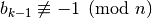
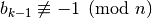
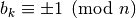

Test di primalità¶
- deterministici: sono i test che sono validi per qualsiasi numero e danno la certezza assoluta che il numero sia primo
- non deterministici: sono test validi per qualche tipologia di numero o che non danno certezza assoluta sulla primalità di un numero
Test banale¶
0 BasicPrime(n) 1 if(n == 2) return PRIME 2 if(n % 2 == 0) return COMPOSITE 3 for(int i = 3; i <= sqrt(n); i += 2) 4 if(n % i == 0) return COMPOSITE 5 return PRIME
Test AKS: Prime is P!¶
0 AKS(n) 1 if(n è una potenza perfetta) 2 return COMPOSITE 3 Sia r l'intero più piccolo, il cui ordine è maggiore a log(n)^2 4 if( 1 < gcd(a, n) < n per qualche a ≤ r ) 5 return COMPOSITE 6 if( n ≤ r ) 7 return PRIME 8 for( a = 1; a <= parte intera di sqrt(φ(r))*log(n); a++ ) 9 if((x + a)^n != x^n + a (mod x^r − 1, n)) 10 return COMPOSITE 11 return PRIME
- n è una potenza perfetta se esistono due interi a e b tali che , ovvero n è divisibile almeno per a, quindi non è primo
- se esiste qualche intero a tale che il massimo comune divisore, gcd, tra a ed n è diverso da 1 e minore di n, vuol dire che a ed n sono divisibili per esso, quindi n non è primo
- se n è composto, allora n è divisibile per qualche numero minore di
 . Se
. Se  , allora al passo 4 viene individuato ogni fattore non banale di n, quindi se n non ha fattori è primo.
, allora al passo 4 viene individuato ogni fattore non banale di n, quindi se n non ha fattori è primo. - l’ultimo passo dell’algoritmo si basa su una proprietà dei numeri primi, ovvero n è un numero primo se e solo se divide tutti i coefficienti dell’espansione polinomiale
- class models.PrimalityTest.AKSPrimeTest¶
- is_prime(n)¶
Rappresenta il metodo base, quando viene chiamato verifica se n è una potenza perfetta. Se non lo è calcola r, iterando sui numeri interi maggiori di 2, verificando che questo numero sia coprimo con n e che il suo ordine sia maggiore di . Quindi viene svolto il test sul gcd e sulla grandezza di n rispetto ad r. Per concludere vengono svolti i test sui polinomi, mediante la libreria Numpy.
- phi(n)¶
Calcola la funzione totiente di Eulero per il numero n.
- testan(a, n, r)¶
Tramite Numpy calcola il polinomio
 e testa i coefficienti
e testa i coefficienti
- powmodn(pn, n, r, m)¶
Effettua l’elevamento a potenza n del polinomio pn.
- ordr(r, n)¶
Calcola iterativamente l’ordine di n.
Per la versione implementata si ringrazia lo sviluppatore che la ha implementata efficientemente in Python, non mi è possibile citarne il nome, in quanto non riportato dalla fonte da cui ho reperito il codice.
Test di Miller-Rabin¶
Principio fondamentale¶
Test di primalità di Fermat¶
 , allora n è probabilmente primo.
, allora n è probabilmente primo.Test di primalità di Miller-Rabin¶
 . Se , allora ci si ferma e si dichiara che n è probabilmente primo. Altrimenti, sia . Se allora n è composto (e*
. Se , allora ci si ferma e si dichiara che n è probabilmente primo. Altrimenti, sia . Se allora n è composto (e*  ) è un fattore non banale di n). Se allora ci si ferma e si dichiara che n probabilmente è primo. Altrimenti, sia . Se allora n è composto. Se , allora n è probabilmente primo. Si itera con questo procedimento fino a che non si raggiunge . Se  , allora n è composto.
) è un fattore non banale di n). Se allora ci si ferma e si dichiara che n probabilmente è primo. Altrimenti, sia . Se allora n è composto. Se , allora n è probabilmente primo. Si itera con questo procedimento fino a che non si raggiunge . Se  , allora n è composto.0 Miller-Rabin(n) 1 if(n == 2) return PRIME 2 if(n pari) return COMPOSITE 3 trova k ed m affinchè m*2^k == n 4 scegli casualmente a tra 2 e n-1 5 b0 = a^m (ottenuto mediante moltiplicazioni successive mod n) 6 if(b0 == 1 or b0 == num-1) return PRIME 7 while(k > 0) 8 b1 = b0^2 mod n 9 if(b1 == 1) 10 return COMPOSITE 11 else if(b1 == n-1 || b1 == -1) 12 return PRIME 13 else: 14 if(k > 0) 15 k -= 1 16 b0 = b1 17 else 18 return COMPOSITE
 ovvero:
ovvero:- : per il principio fondamentale possiamo affermare che n è composto e possiamo calcolarne un fattore non banale;
-  in questo caso l’algoritmo si sarebbe fermato al passo precedente. Infatti il cui quadrato è equivalente a 1 se n è primo, per il teorema di Fermat.
 e , è improbabile che accada, poichè considerando separatamente le successioni
e , è improbabile che accada, poichè considerando separatamente le successioni  per p e q, solitamente le due raggiungono 1 e -1 in istanti differenti, per cui con e per il principio fondamentale può essere fattorizzato. A volte però le due successioni convergono allo stesso valore, per cui il test può fallire.
per p e q, solitamente le due raggiungono 1 e -1 in istanti differenti, per cui con e per il principio fondamentale può essere fattorizzato. A volte però le due successioni convergono allo stesso valore, per cui il test può fallire.- class models.PrimalityTest.MillerRabinTest¶
- is_prime(num)¶
Il metodo corrisponde all’algoritmo visto sopra, restituisce True o False a seconda che il numero sia primo o meno. Per ridurre la possibilità di incorrere in pseudoprimi forti il test sopra esposto viene ripetuto più volte con basi a scelte casualmente.
| [1] | Agrawal, Manindra; Kayal, Neeraj; Saxena, Nitin (2004). “PRIMES is in P” |